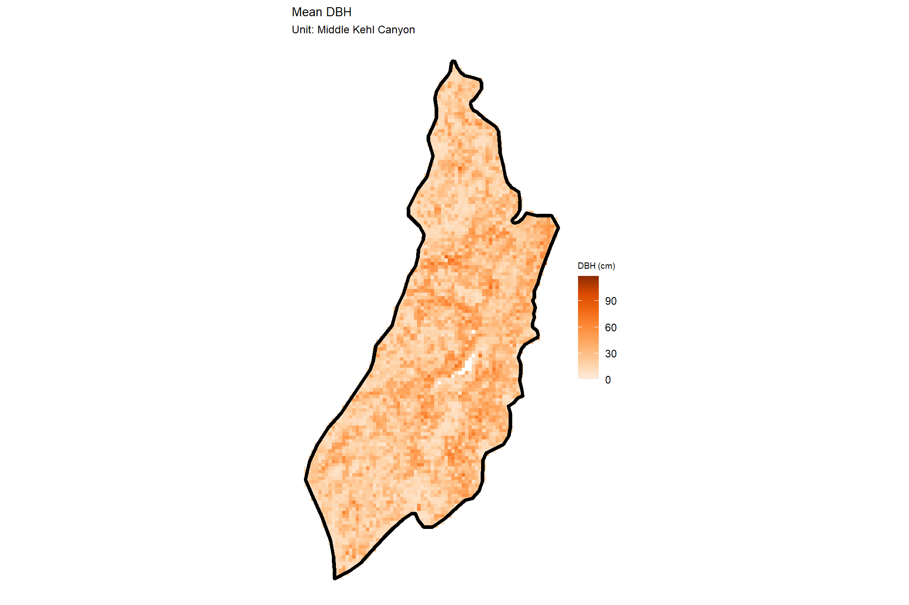
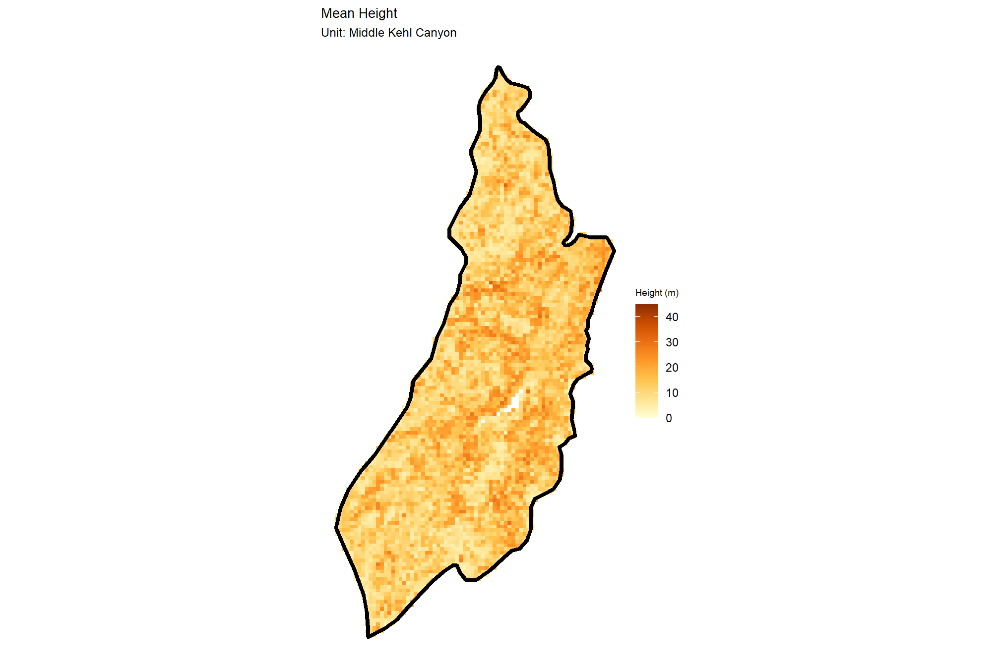
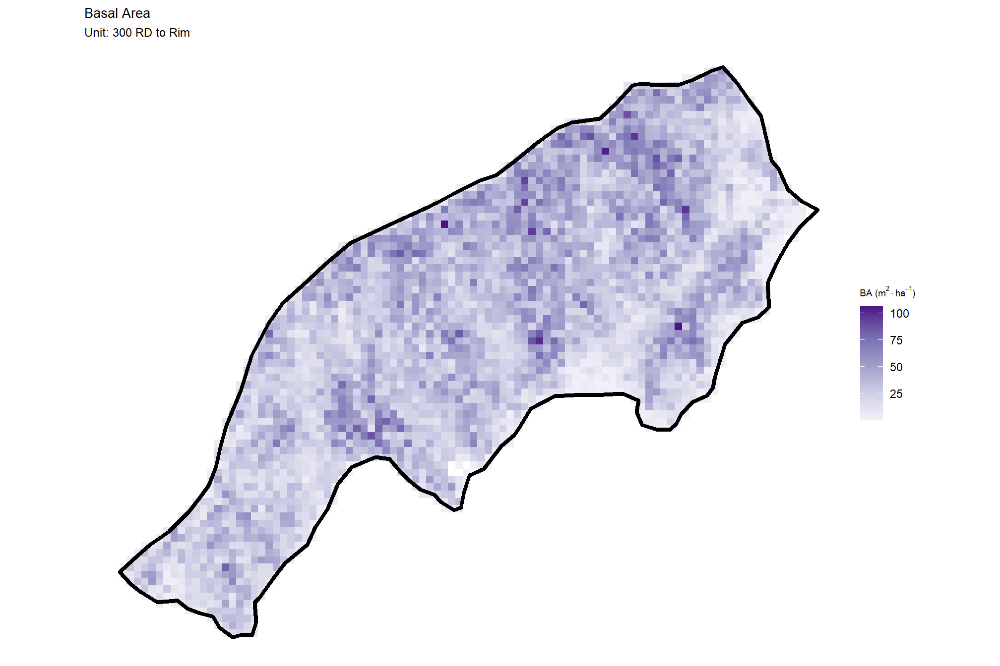

Section 3 Forest Stand Summary
In this section we’ll process the point cloud-extracted tree list data given stand boundaries that fall within the extent of the original point cloud data. When processing point cloud data with the objective for summarizing data within a forest stand, it is imperative to ensure that the point cloud extent completely covers and extends beyond the stand extent to avoid edge effects and tree artifacts.
3.1 Load data
first, we’ll load our stand data and the boundary data of the point cloud that we processed
# las data bounds
las_ctg_sf <- sf::st_read("../data/point_cloud_processing_delivery/raw_las_ctg_info.gpkg", quiet = T)
# get our proj crs
proj_crs <- sf::st_crs(las_ctg_sf)
# stands
stand_sf <- sf::st_read("../data/QUIK-Fire_Boundary/QUIK-Fire_Boundary.shp", quiet = T) %>%
sf::st_transform(proj_crs) %>%
dplyr::rename_with(~tolower(stringr::str_replace_all(.x,"\\.", "_"))) %>%
dplyr::rename(unit_id = id) %>%
dplyr::mutate(
stand_area_m2 = sf::st_area(.) %>% as.numeric()
, stand_area_ha = stand_area_m2/10000
)
# set our colors for the units
if(nrow(stand_sf)<length(harrypotter::hp_palettes$lunalovegood)){
my_pal <- harrypotter::hp(n=nrow(stand_sf), option = "lunalovegood")
}else{
my_pal <- viridis::turbo(n=nrow(stand_sf))
}what is the stand data?
## Rows: 2
## Columns: 7
## $ unit_id <dbl> 1, 2
## $ unit_name <chr> "300 RD to Rim", "Middle Kehl Canyon"
## $ hectares <dbl> 119.658, 200.666
## $ acres <dbl> 295.555, 495.645
## $ geometry <POLYGON [m]> POLYGON ((470742 3810364, 4..., POLYGON ((469974.3 38112…
## $ stand_area_m2 <dbl> 1195649, 2005096
## $ stand_area_ha <dbl> 119.5649, 200.5096let’s look at these bounds on a map
mapview::mapview(
las_ctg_sf
, layer.name = "point cloud tile"
, color = "black"
, lwd = 1
, alpha.regions = 0
, label = FALSE
, legend = FALSE
, popup = FALSE
) +
mapview::mapview(
stand_sf %>% dplyr::select(unit_name)
, zcol = "unit_name"
, col.regions = my_pal
, layer.name = "stand bounds"
, alpha.regions = 0.8
) we processed point cloud data well outside these stand bounds (it is not necessary to process data this far outside of our stands, a one tile buffer in this situation would have sufficed)
load in the tree top points data from cloud2trees::cloud2trees()
# get the data from already run
treetops_sf <-
list.files(
"../data/point_cloud_processing_delivery"
, pattern = "final_detected_tree_tops.*\\.gpkg$"
, full.names = T
) %>%
normalizePath() %>%
purrr::map(\(x)
sf::st_read(
dsn = x
, quiet = T
)
) %>%
dplyr::bind_rows()we’ll keep only trees where the tree top point falls within one of our stands and then use this tree list to filter our crown data so that we get the full crown polygon even if it extends outside of the stand boundary
treetops_sf <- treetops_sf %>%
sf::st_intersection(stand_sf %>% dplyr::select(unit_id,unit_name,tidyselect::starts_with("stand_area_")))load in the tree crown polygon data from cloud2trees::cloud2trees() and filter based on the tree list
# get the data from already run
crowns_sf <-
list.files(
"../data/point_cloud_processing_delivery"
, pattern = "final_detected_crowns.*\\.gpkg$"
, full.names = T
) %>%
normalizePath() %>%
purrr::map(\(x)
sf::st_read(
dsn = x
, quiet = T
)
) %>%
dplyr::bind_rows() %>%
dplyr::inner_join(
treetops_sf %>%
sf::st_drop_geometry() %>%
dplyr::select(treeID,unit_id,unit_name,tidyselect::starts_with("stand_area_"))
, by = "treeID"
)
# the records are the same
identical(nrow(treetops_sf), nrow(crowns_sf))save the data by unit for sharing with a boss, coworker, friend, etc.
# make a dir for saving this stand-level data to
outdir <- "../data/mogollon_rim_fire_unit_trees"
if(!dir.exists(outdir)){dir.create(outdir, showWarnings = F)}# write crowns and tree tops
write_temp <- crowns_sf$unit_id %>%
unique() %>%
purrr::map(function(x, new_crs = proj_crs, my_outdir = outdir){
# dsn's
cf <- file.path( my_outdir, paste0("final_detected_crowns_unit_",x,".gpkg") )
tf <- file.path( my_outdir, paste0("final_detected_tree_tops_unit_",x,".gpkg") )
### write the data to the disk
# crown vector polygons
sf::st_write(
crowns_sf %>%
dplyr::filter(unit_id == x) %>%
sf::st_transform(new_crs)
, dsn = cf
, append = FALSE
, quiet = TRUE
)
# tree top vector points
sf::st_write(
# get tree points
crowns_sf %>%
dplyr::filter(unit_id == x) %>%
sf::st_drop_geometry() %>%
sf::st_as_sf(coords = c("tree_x", "tree_y"), crs = sf::st_crs(crowns_sf)) %>%
sf::st_transform(new_crs) %>%
dplyr::mutate(
tree_x = sf::st_coordinates(.)[,1]
, tree_y = sf::st_coordinates(.)[,2]
)
, dsn = tf
, append = FALSE
, quiet = TRUE
)
})load in the DTM, aggregate to 2 m resolution, and write it
dtm_rast <- terra::rast("../data/point_cloud_processing_delivery/dtm_1m.tif")
# quick plot
terra::plot(dtm_rast, axes = F, main = "DTM (m)")
terra::plot(terra::vect(stand_sf), add = T, col = NA, border = "black", lwd = 2)
aggregate to 2 m
res_temp <- terra::res(dtm_rast)[1]
des_res_temp <- 2
if(res_temp<des_res_temp){
dtm_rast <- terra::aggregate(
dtm_rast
, fact = round(des_res_temp/res_temp)
, fun = "mean"
, na.rm = T
, cores = lasR::half_cores()
, filename = file.path(outdir, paste0("dtm_",des_res_temp, "m.tif"))
, overwrite = T
)
}## |---------|---------|---------|---------|========================================= ## [1] 2 2we can also load in the CHM raster and look at that quickly
chm_rast <- terra::rast("../data/point_cloud_processing_delivery/chm_0.25m.tif")
# quick plot
chm_rast %>%
terra::aggregate(
fact = 1/terra::res(chm_rast)[1]
, fun = "mean"
, na.rm = T
, cores = lasR::half_cores()
) %>%
terra::plot(
col = viridis::plasma(100)
, axes = F, alpha = 0.8
, main = "CHM (m)"
)
terra::plot(terra::vect(stand_sf), add = T, col = NA, border = "black", lwd = 2)
3.2 Silvicultural metrics
Let’s look at some common stand-level forestry metrics
### stand-level summaries
silv_metrics <-
treetops_sf %>%
sf::st_drop_geometry() %>%
# dplyr::filter(dbh_cm >= ostory_dbh_cm) %>%
dplyr::ungroup() %>%
dplyr::group_by(unit_id, unit_name, stand_area_ha) %>%
dplyr::summarise(
n_trees = dplyr::n_distinct(treeID)
, mean_dbh_cm = mean(dbh_cm, na.rm = T)
, mean_tree_height_m = mean(tree_height_m, na.rm = T)
, loreys_height_m = sum(basal_area_m2*tree_height_m, na.rm = T) / sum(basal_area_m2, na.rm = T)
, basal_area_m2 = sum(basal_area_m2, na.rm = T)
, sum_dbh_cm_sq = sum(dbh_cm^2, na.rm = T)
) %>%
dplyr::ungroup() %>%
dplyr::mutate(
trees_per_ha = (n_trees/stand_area_ha)
, basal_area_m2_per_ha = (basal_area_m2/stand_area_ha)
, qmd_cm = sqrt(sum_dbh_cm_sq/n_trees)
) %>%
dplyr::select(-c(sum_dbh_cm_sq))
### export tabular
write.csv(
silv_metrics
, file.path(outdir, "stand_silv_metrics.csv")
, row.names = F
, append = F
)stand-level silvicultural summary
silv_metrics %>%
dplyr::select(
unit_name
, stand_area_ha
, n_trees
, mean_dbh_cm
, qmd_cm
, mean_tree_height_m
, loreys_height_m
, trees_per_ha
, basal_area_m2_per_ha
) %>%
dplyr::mutate(
dplyr::across(
.cols = c(stand_area_ha, n_trees)
, .fns = ~ scales::comma(.x, accuracy = 1)
)
) %>%
kableExtra::kbl(
digits = 1
, escape = F
, caption = "Silvicultral metrics by stand unit"
, col.names = c(
"Unit Name"
, "area (ha)"
, "trees"
, "mean<br>DBH (cm)"
, "QMD (cm)"
, "mean<br>Ht. (m)"
, "Loreys<br>Ht. (m)"
, "TPH"
, "BA<br>m<sup>2</sup> ha<sup>-1</sup>"
)
) %>%
kableExtra::kable_styling()| Unit Name | area (ha) | trees |
mean DBH (cm) |
QMD (cm) |
mean Ht. (m) |
Loreys Ht. (m) |
TPH |
BA m2 ha-1 |
|---|---|---|---|---|---|---|---|---|
| 300 RD to Rim | 120 | 47,940 | 24.2 | 31.9 | 12.0 | 23.3 | 401.0 | 32.0 |
| Middle Kehl Canyon | 201 | 107,684 | 20.7 | 28.1 | 10.6 | 22.4 | 537.1 | 33.3 |
3.2.1 Height Distribution
# there are always tree heights
treetops_sf %>%
ggplot2::ggplot(mapping = ggplot2::aes(x = tree_height_m, color = unit_name, fill = unit_name)) +
ggplot2::geom_density(alpha = 0.5) +
ggplot2::facet_grid(cols = dplyr::vars(unit_name)) +
ggplot2::scale_color_manual(values = my_pal) +
ggplot2::scale_fill_manual(values = my_pal) +
ggplot2::scale_x_continuous(breaks = scales::breaks_extended(11)) +
ggplot2::labs(x = "tree ht. (m)", y = "", subtitle = "Distribution of tree height by stand") +
ggplot2::theme_light() +
ggplot2::theme(
legend.position = "none"
, axis.text.y = ggplot2::element_blank()
, axis.ticks.y = ggplot2::element_blank()
, strip.text = ggplot2::element_text(color = "black", size = 10)
)
3.2.2 DBH Distribution
treetops_sf %>%
ggplot2::ggplot(mapping = ggplot2::aes(x = dbh_cm, color = unit_name, fill = unit_name)) +
ggplot2::geom_density(alpha = 0.5) +
ggplot2::facet_grid(cols = dplyr::vars(unit_name)) +
ggplot2::scale_color_manual(values = my_pal) +
ggplot2::scale_fill_manual(values = my_pal) +
ggplot2::scale_x_continuous(breaks = scales::breaks_extended(11)) +
ggplot2::labs(x = "tree DBH (cm)", y = "", subtitle = "Distribution of tree DBH by stand") +
ggplot2::theme_light() +
ggplot2::theme(
legend.position = "none"
, axis.text.y = ggplot2::element_blank()
, axis.ticks.y = ggplot2::element_blank()
, strip.text = ggplot2::element_text(color = "black", size = 10)
)
3.3 Spatial Forest Structure
Because we have a spatial tree list, we can look at the spatial arrangement of forest structural metrics
first, let’s make a function to crop the raster to a stand and plot the raster and stand together
# function to crop and plot a raster data for a stand
plot_raster_stand_fn <- function(
rast
, stand
, buffer=5
, des_res=1
, agg_fun = "mean"
, stand_color = "black"
, my_title = ""
, scale_name = ""
, bbox = F
) {
# crop the raster
crop_rast <- rast %>%
terra::crop(
stand %>%
sf::st_bbox() %>%
sf::st_as_sfc() %>%
sf::st_buffer(buffer) %>%
terra::vect() %>%
terra::project(terra::crs(rast))
)
if(!bbox){
crop_rast <- crop_rast %>%
terra::mask(
stand %>%
sf::st_buffer(buffer) %>%
terra::vect() %>%
terra::project(terra::crs(rast))
)
}
# aggregate the raster
res_temp <- terra::res(rast)[1]
if(res_temp<des_res){
crop_rast <- terra::aggregate(
crop_rast
, fact = round(des_res/res_temp)
, fun = agg_fun
, na.rm = T
, cores = lasR::half_cores()
)
}
# plot it
crop_rast %>%
terra::as.data.frame(xy=T) %>%
dplyr::rename(f=3) %>%
ggplot2::ggplot() +
ggplot2::geom_tile(
mapping = ggplot2::aes(x=x, y=y, fill = f)
) +
ggplot2::geom_sf(
data = stand %>% sf::st_transform(terra::crs(rast))
, color = stand_color, fill = NA, lwd = 1.5
) +
ggplot2::labs(title = my_title, fill = scale_name) +
ggplot2::theme_void()
}
# plot_raster_stand_fn(
# dtm_rast
# , stand = stand_sf[1,]
# , buffer = 5
# , des_res = 1
# , stand_color = my_pal[1]
# , my_title = "DTM"
# , scale_name = "DTM (m)"
# )3.3.1 CHM
the canopy height model is a raster dataset that represents the height of objects above the ground, we set the minimum height at 2 m
# get the plot for each stand
p_temp <- 1:nrow(stand_sf) %>%
purrr::map(function(x, ul = max(terra::values(chm_rast), na.rm = T), ll = 0){
plot_raster_stand_fn(
chm_rast
, stand = stand_sf[x,]
, buffer = 5
, des_res = 2
, stand_color = "black"
, my_title = "Canopy Height Model"
, scale_name = "CHM (m)"
, agg_fun = "max"
) +
ggplot2::labs(subtitle = paste("Unit:",stand_sf[x,]$unit_name)) +
ggplot2::scale_fill_viridis_c(option = "plasma",limits = c(ll,ul))
})## |---------|---------|---------|---------|========================================= check out our plots
## [[1]]
##
## [[2]]
3.3.2 Function to Rasterize
the CHM was easy to plot because it was already a raster dataset; what if we want to plot a raster of a metric based on our vector tree data?
we need to define a function to rasterize our spatial tree list by aggregating the metric within a raster cell
vect_to_rast_fn <- function(
vect
, des_res = 1
, buffer = 5
, fun = "mean" # function(x){mean(x, na.rm=T)}
, field = "your_vector_attribute"
, zero_na = F
) {
# sample sf object with a bounding box + buffer
my_sf <- vect %>%
sf::st_bbox() %>%
sf::st_as_sfc(crs = sf::st_crs(vect)) %>%
sf::st_buffer(buffer)
# extract bbox coordinates
bbox <- sf::st_bbox(my_sf)
# create a terra raster using the bbox
my_raster <- terra::rast(
xmin = bbox[1], ymin = bbox[2], xmax = bbox[3], ymax = bbox[4]
, resolution = des_res
, crs = sf::st_crs(vect)
)
# rasterize the vector data onto the grid, using a desired aggregation function (e.g., "mean")
rasterized_data <- terra::rasterize(
x = vect
, y = my_raster
, fun = fun
, field = field
)
if(zero_na){rasterized_data <- terra::subst(rasterized_data,NA,0)}
terra::crs(rasterized_data) <- vect %>% terra::vect() %>% terra::crs()
return(rasterized_data)
}
# vect_to_rast_fn(
# treetops_sf %>% dplyr::filter(unit_id==treetops_sf$unit_id[2])
# , des_res = 10
# , field = "dbh_cm"
# , fun = "mean" #function(x){mean(x, na.rm=T)}
# , zero_na = F
# ) %>%
# # terra::plot()
# terra::summary()we can combine our create a raster and plot it function
# we can combine our create a raster and plot it function
vect_to_rast_plot_fn <- function(
trees_vect
, stand_vect
, fun = "mean" # function(x){mean(x, na.rm=T)}
, field = "your_vector_attribute"
, zero_na = F
, buffer = 5
, des_res = 10
, stand_color = "black"
, my_title = ""
, scale_name = ""
) {
# get the raster
rast <- vect_to_rast_fn(
vect = trees_vect
, des_res = des_res
, buffer = buffer
, fun = fun
, field = field
, zero_na = zero_na
)
# plot it
plot_raster_stand_fn(
rast = rast
, stand = stand_vect
, buffer = buffer
, des_res = des_res
, stand_color = stand_color
, my_title = my_title
, scale_name = scale_name
)
}3.3.3 Mean DBH
take this for a spin to get a raster of mean DBH plotted with our stand boundary
# get the plot for each stand
p_temp <- 1:nrow(stand_sf) %>%
purrr::map(function(x, ul = max(treetops_sf$dbh_cm,na.rm = T), ll = 0){
vect_to_rast_plot_fn(
trees_vect = treetops_sf %>% dplyr::filter(unit_id == stand_sf[x,]$unit_id)
, stand_vect = stand_sf[x,]
, fun = "mean"
, field = "dbh_cm"
, zero_na = F
, buffer = 5
, des_res = 20
, stand_color = "black"
, my_title = "Arrangement of Mean DBH"
, scale_name = "DBH (cm)"
) +
ggplot2::labs(subtitle = paste("Unit:",stand_sf[x,]$unit_name)) +
ggplot2::scale_fill_viridis_c(option = "mako", direction = -1, limits = c(ll,ul))
})check out our plots
## [[1]]
##
## [[2]]
3.3.4 QMD
to get the quadratic mean diameter (QMD) we are going to have to create a custom function that takes a list of DBH values and returns a single value
QMD is a measure of the diameter of the tree of mean basal area:
\[ \textrm{quadratic mean diameter (QMD)} = \sqrt{\frac{\sum{d_{i}^{2}}}{n}} \]
, where \(d_{i}\) is the diameter at breast height of an individual tree, and \(n\) is the total number of trees.
qmd_fn <- function(x) {
sqrt(sum(x^2, na.rm=T)/length(x[!is.na(x)]))
}
# get the plot for each stand
p_temp <- 1:nrow(stand_sf) %>%
purrr::map(function(x, ul = round(qmd_fn(max(treetops_sf$dbh_cm,na.rm = T))*.95), ll = 0){
vect_to_rast_plot_fn(
trees_vect = treetops_sf %>% dplyr::filter(unit_id == stand_sf[x,]$unit_id)
, stand_vect = stand_sf[x,]
, fun = qmd_fn
, field = "dbh_cm"
, zero_na = F
, buffer = 5
, des_res = 20
, stand_color = "black"
, my_title = "Arrangement of Quadratic Mean Diameter"
, scale_name = "QMD (cm)"
) +
ggplot2::labs(subtitle = paste("Unit:",stand_sf[x,]$unit_name)) +
ggplot2::scale_fill_viridis_c(option = "cividis", begin = 0.55, limits = c(ll,ul))
})check out our plots
## [[1]]##
## [[2]]
3.3.5 Basal Area
to get Basal Area (BA) in square meters per hectare we will also need to create a function that uses the area of the raster cell
# get the plot for each stand
# max(silv_metrics$basal_area_m2_per_ha)*2
p_temp <- 1:nrow(stand_sf) %>%
purrr::map(function(x, my_res = 20, ul = NA, ll = NA){
vect_to_rast_plot_fn(
trees_vect = treetops_sf %>% dplyr::filter(unit_id == stand_sf[x,]$unit_id)
, stand_vect = stand_sf[x,]
, fun = function(x){sum(x, na.rm=T)/((my_res^2)/10000)}
, field = "basal_area_m2"
, zero_na = F
, buffer = 5
, des_res = my_res
, stand_color = "black"
, my_title = "Arrangement of Basal Area"
, scale_name = latex2exp::TeX("BA ($m ^ 2 \\cdot ha^{-1}$)")
) +
ggplot2::labs(subtitle = paste("Unit:",stand_sf[x,]$unit_name)) +
harrypotter::scale_fill_hp(option = "slytherin", limits = c(ll,ul))
})check out our plots
## [[1]]
##
## [[2]]
3.3.6 TPH
to get trees per hectare (TPH) we will also need to create a function that uses the area of the raster cell
# get the plot for each stand
# max(silv_metrics$basal_area_m2_per_ha)*2
p_temp <- 1:nrow(stand_sf) %>%
purrr::map(function(x, my_res = 20, ul = 2333, ll = NA){
vect_to_rast_plot_fn(
trees_vect = treetops_sf %>% dplyr::filter(unit_id == stand_sf[x,]$unit_id)
, stand_vect = stand_sf[x,]
, fun = function(x){length(x)/((my_res^2)/10000)}
, field = "tree_height_m" # just need something to count
, zero_na = F
, buffer = 5
, des_res = my_res
, stand_color = "black"
, my_title = "Arrangement of Trees per Hectare"
, scale_name = "TPH"
) +
ggplot2::labs(subtitle = paste("Unit:",stand_sf[x,]$unit_name)) +
harrypotter::scale_fill_hp(option = "mischief", limits = c(ll,ul))
})check out our plots
## [[1]]
##
## [[2]]